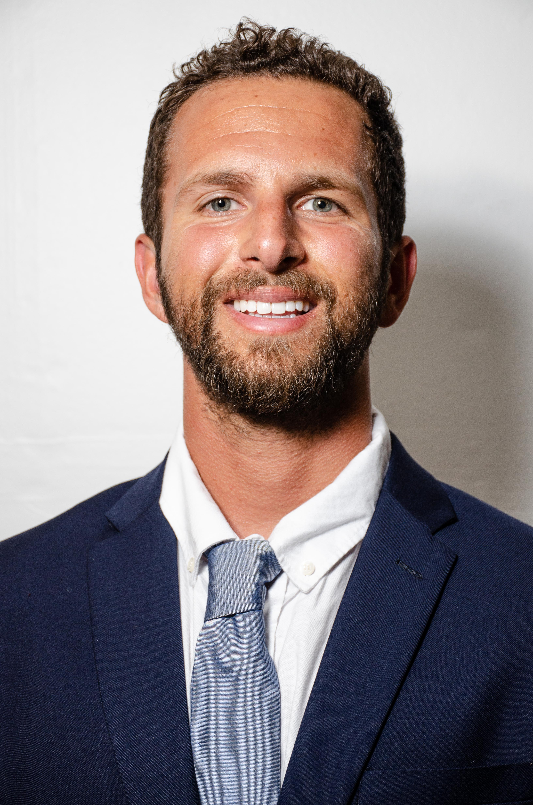
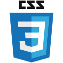
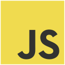

Robert A Curtis
ROBERT A CURTIS
ABOUT ME

Robert Curtis recieved his B.F.A with a concentration in Digital Imaging and Photography from the University of North Florida in 2016. His work ranged from landscapes to still life photography and his specialization was artifical lighting. In the fall of 2016, Robert moved to New York City to join a Catholic religous communtiy called the Franciscan Friars of the Renewal where he lived a life of service to the materially poor while discerning a vocation to the priesthood.
Spending the next five years as a member of this religous congregation, Robert worked at various soup kitchens and homeless shelters in the northeast as well as founding inner city after school youth programs and a food assitance ministry in Newburgh, NY.
In 2021 Robert drove from the Bronx, NY to Oakland, CA with two other Franciscan Friars to help found a new friary in Oakland, California. In his time in Oakland he designed a simple website for the new mission. It was then he became interested in web development. In July of 2021, Robert decided to move to Southern California to pursue studies in web development at Learning Fuze.
TECHNOLOGIES


MY PROJECTS

CONTACT ME
Find more of my work on Github